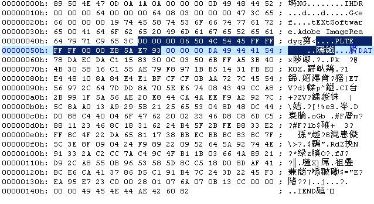
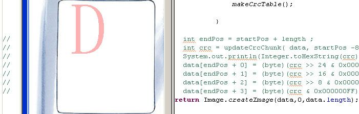
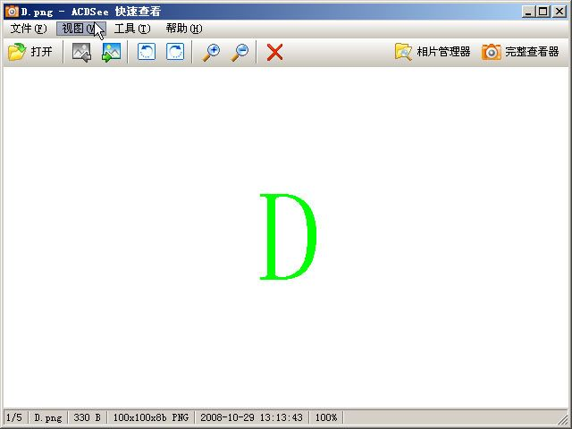

先看下面一张图片先
这是一张用PhotoShop生成的png图片.下面是它的16位数据 
上图选择的地方,就是主要要改的调色板数据块(PLTE chunk),关于PNG的规格在http://dev.gameres.com/Program/Visual/Other/PNGFormat.htm这里有说明,中文的.所谓调色板数据块就是存放PNG所用的颜色种类.
大家发现这张图片仅用了两种颜色,红和白.所以在PLTE(50 4C 54 45)后看到FF FF FF FF 00 00三个字节为一种颜色.这里就是白和红.最后的四位(EB 5A E7 93)就是CRC码.如果将FF 00 00 改成00 FF 00.即把红色改成绿色.用ACDSee发现打不开图片.提示」原始数据格式无法识别」因为这里还需要重新生成CRC.
最下面是生成CRC码的算法,验证了很多次,应该没错的.虽然对CRC具体原理还不够理解.一开始我以为只需传FF FF FF 00 FF 00这六个字节就可以.在这里失败了很多次.才反复验证了我的CRC算法.后来在网友写的图片淡入处理的程序中,才发现原来是还要包含前面8的八个字节.于是满怀欣喜的把这14个字节传进去,生成出1C 62 F5 FE.改到图片里面,用ACDSee打开可依旧提示」原始数据格式无法识别」.我就纳闷了.为什么网友写的程序可以正常显示图片呢?难道J2ME没有校检CRC码.于是我索性把程序中更新CRC的代码给注释掉.发现程序真的正常运行.很大打击因为花了很多时间在检查自己的代码上面.

如上图. 虽然觉得很奇怪不过,想想也对.J2ME的程序本来就资源紧张.对于仅用来显示的图片不校检CRC可以省下一些时间.所以J2ME不校检CRC的做法是可以理解的.但我更奇怪的是很多程序里面都有更新CRC码.甚至都生成错.比如上图的程序.
startPos就是数据块数据的开始位置.-8就包含了长度和数据块类型码.这样生成的CRC码是错的.所以ACDSee提示错误.
后来我在http://www.w3.org/TR/PNG/#5Chunk-layout才发现正确的CRC是用数据块类型码+数据块数据来生成的.这里是png格式的详细规范,有兴趣的童鞋可以看看.

终于成功,改成绿色相应的CRC码是C6 E6 2E 0C
//生成CRC码
public int creatCRC(byte[] data ,int start, int length){
long crc=0xFFFFFFFFL;
for(int i=start;i>8));
}
return (int)(crc\^0xFFFFFFFF);
}
static long poly=0xEDB88320L;
// 建立CRC校验查找表
long crcTable[];
public void createTable(){
crcTable=new long[256];
long crc;
for(int i=0;i<256;i++){
crc=(long)i;
for(int j=0;j<8;j++){ if((crc0x1)==1) crc=poly\^(crc>>1);
else crc>>=1;
} crcTable[i]=crc;
} }
——————————————狡猾的分割线——————————————————
这其实是篇一年多前的文章,发出来试试看codecolorer插件的效果,结果如上所示,还不错.
有好久没碰ME了,最近又开始拿起.关于J2ME对PNG的支持问题不是很清楚,据说是有些设备会校检CRC,有些CRC会被忽略.所以可以确定的仅仅是wtk上的模拟器是不校检CRC的,最新版本的wtk就难说了.
2010年01月01日,感慨一下…我已经好久没用ACDSee(从3.0用到8.0好像),Me也不用EclicpseME,改用Netbeans了.